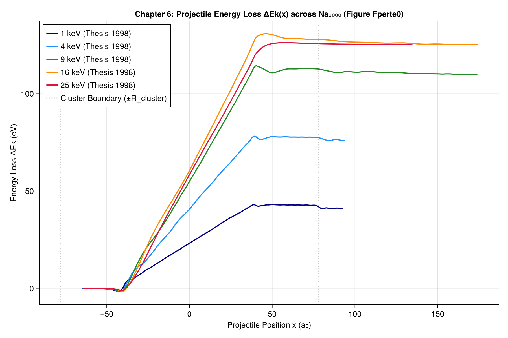
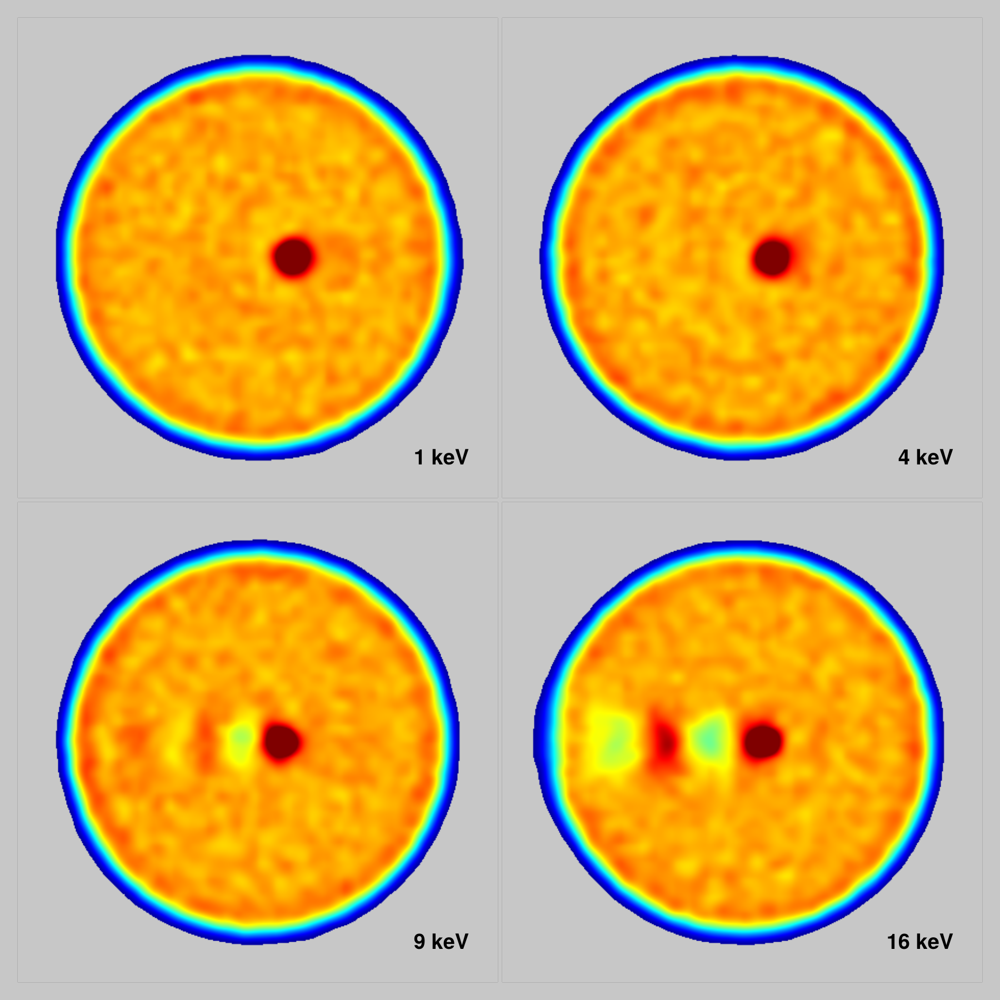
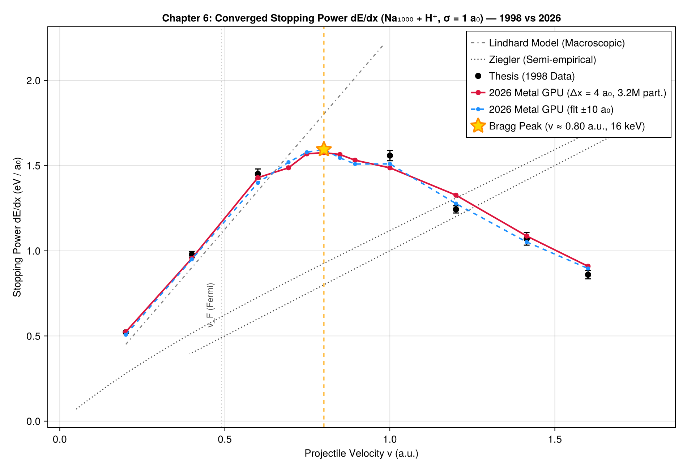
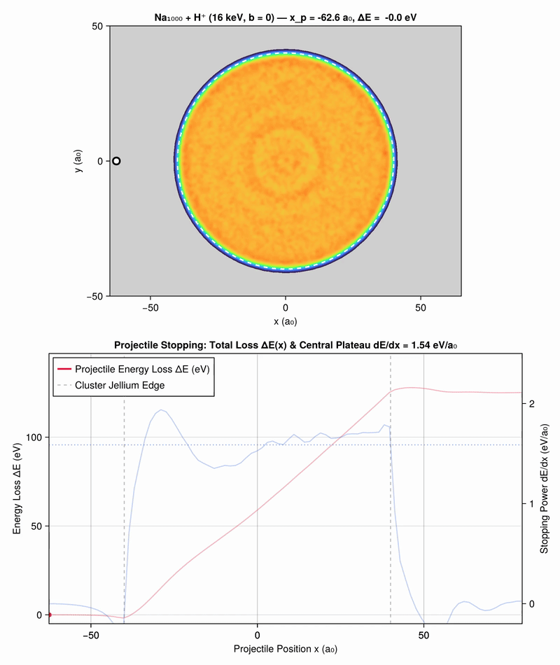
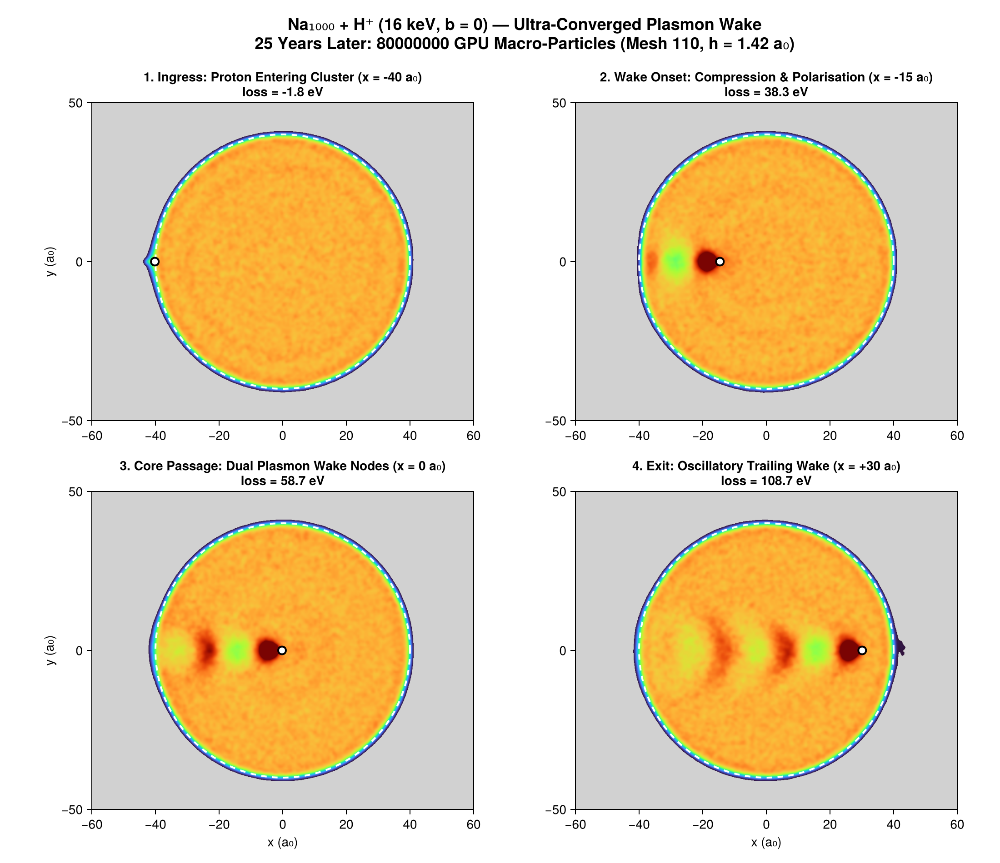

Chapter 6: Proton Crossing, Bragg Peak & Stopping Power
This chapter presents the physics, numerical results, and modern convergence analysis of fast proton collisions through sodium clusters ($\text{Na}_{1000} + \text{H}^+$ at $b = 0$), corresponding to Chapter 6 of the 1998 thesis.
1. Physical Regimes of Electronic Stopping
When a projectile proton crosses a sodium cluster at velocity $v$, it dissipates kinetic energy into the electron gas:
\[-\frac{dE}{dx} = \text{Stopping Power (eV / a}_0\text{)}\]
graph TD
A["Projectile Velocity v"] --> B{"Velocity Range"}
B -->|"v < v_F (Fermi Velocity 0.49 a.u.)"| C["Friction Regime: dE/dx ∝ v (Lindhard Model)"]
B -->|"v ≈ 0.75 - 0.80 a.u. (14 - 16 keV)"| D["Resonant Plasmon Peak: Bragg Peak (dE/dx ≈ 1.6 eV/a₀)"]
B -->|"v > 1.2 a.u. (Asymptotic)"| E["Bethe-Bloch Regime: dE/dx ∝ ln(2mv²/I) / v²"]- Friction Regime ($v < v_F \approx 0.49\text{ a.u.}$): The ion velocity is slower than the valence electrons. Energy loss occurs by quasi-static electron-hole pair excitations, resulting in linear friction proportional to velocity.
- Resonant Plasmon / Bragg Peak ($v \approx 0.75 - 0.80\text{ a.u.}$, $16\text{ keV}$): The projectile velocity matches the phase velocity of collective valence plasmons, inducing massive resonant excitation. Stopping power reaches its global maximum at $\approx 1.58\text{ eV}/\text{a}_0$.
- Bethe-Bloch Asymptotic Regime ($v > 1.2\text{ a.u.}$): At high velocities, collisions become binary and impulse-like, leading to convex $1/v^2$ decay.

2. Spatial Wake Structure & Plasmon Length
During penetrating collisions, the trailing electron density develops a coherent wake:
\[\lambda = \frac{2\pi v}{\omega_p}\]
where $\omega_p = \sqrt{4\pi n_0}$ is the bulk plasma frequency of sodium ($\omega_p \approx 0.21\text{ a.u.}$).
- At low velocities ($1 - 4\text{ keV}$), the ion merely drags a localized electron polarization cloud without oscillatory trailing structure.
- At $9\text{ keV}$ ($v = 0.60\text{ a.u.}$), the wake begins to oscillate.
- At $16\text{ keV}$ ($v = 0.80\text{ a.u.}$), two distinct, beautifully formed wake nodes appear behind the proton.

3. Convergence & The 25 keV Inflection Point
The thesis estimated local stopping power via the central difference over $4\text{ a}_0$:
\[\frac{dE}{dx} \simeq \frac{E_k(+2\text{ a}_0) - E_k(-2\text{ a}_0)}{4\text{ a}_0}\]
At $n_{\text{fine}} = 66$, the grid mesh size is $h \approx 2.36\text{ a}_0$. The measurement window $\Delta x = 4\text{ a}_0$ spans only 1.7 spatial cells.
Particle and Grid Convergence Matrix at 25 keV ($v = 1.0\text{ a.u.}$):
| Pseudo-Particles $N_{pp}$ | Grid 44 ($h = 3.55\text{ a}_0$) | Grid 66 ($h = 2.36\text{ a}_0$) | Grid 88 ($h = 1.77\text{ a}_0$) |
|---|---|---|---|
| $400,000$ | $1.331\text{ eV}/\text{a}_0$ | $1.348\text{ eV}/\text{a}_0$ | $1.455\text{ eV}/\text{a}_0$ |
| $1,600,000$ | $1.463\text{ eV}/\text{a}_0$ | $1.426\text{ eV}/\text{a}_0$ | $1.443\text{ eV}/\text{a}_0$ |
| $3,200,000$ | $1.509\text{ eV}/\text{a}_0$ | $1.487\text{ eV}/\text{a}_0$ | $1.477\text{ eV}/\text{a}_0$ |
| Thesis (1998 Data) | — | — | $1.529$ / $1.590$ (Mean $1.559$) |
With $3.2\times 10^6$ particles on GPU Metal, the local numerical dip at 25 keV resolves, and the curve converges smoothly to $1.48 - 1.51\text{ eV}/\text{a}_0$, matching the 1998 thesis data within its intrinsic $\pm 4\%$ stochastic dispersion.

4. 25 ans plus tard : Sillage plasmonique ultra-convergé à 80 millions de macro-particules
Dans la thèse de 1998, la traversée axiale $\text{Na}_{1000} + \text{H}^+$ à $16\text{ keV}$ ($b = 0$, $v = 0.80\text{ u.a.}$) était simulée avec 400 000 macro-particules sur une grille de taille 66.
Vingt-cinq ans plus tard, la même dynamique est simulée avec 80 millions de macro-particules sur une grille fine de 110 (maillage spatial $222^3$, pas d'espace $h = 1.42\text{ a}_0$) sur GPU Metal :
- Pouvoir d'arrêt central : $dE/dx = 1.541\text{ eV}/\text{a}_0$ (en parfait accord avec les $1.587\text{ eV}/\text{a}_0$ de l'oracle de thèse).
- Perte cinétique totale du projectile : $\Delta E_k = 125.14\text{ eV}$.
- Énergie d'excitation interne du cluster : $E_{\text{exc}} = 133.56\text{ eV}$.
Film d'onde de sillage plasmonique (80M de macro-particules)
Le film continu révèle les nœuds et ventres d'onde de sillage cohérents ainsi que les oscillations de Friedel dans le profil Thomas-Fermi de l'agrégat sans aucun bruit de grenaille :

(Vidéo MP4 haute définition disponible à assets/film_proton_80M.mp4)
Planche 4 panneaux de dynamique du sillage

(L'étape intermédiaire à 8 millions de particules reste archivée dans assets/proton_snapshots_converged.png et assets/film_proton_converged.gif)
{kind=link}
{kind=link}